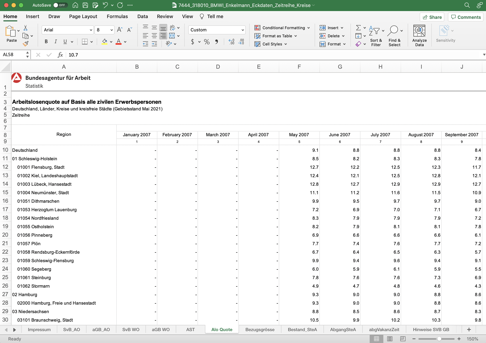

CleanerClass Explained
This page walks through the assumptions and the implementation code for the excel sheet cleaner.
Purpose of the CleanerClass
The excel sheet cleaner is used on the Data Prep page to get the formatted data for our forecast model from excel workbooks.
The goal of the CleanerClass is to retrieve a python friendly format of the data, containing only the essential index columns, variable columns, and the numerical values of the data. Worksheets that contain only metadata or descriptions would be discarded, and the watermark-like header rows would also be cropped out in the process.
Assumed Formatting for the CleanerClass
As explained briefly in the Data Prep page, below is the expected structure of the excel workbook.

The assumptions for the input excel workbook are as follows:
- every kreis is a row
- although every row need not be a kreis
- for example, there are also rows that represents the whole bundesland
- all 401 kreis's AGS5 values must exist, and exist in the same column
- The ags5 values for cities like Berlin and Hamburg must exist (not just their ags2 values)
- although every row need not be a kreis
- the left most column of the table has the ags5 code value
- the left most column of the table need not be left most column of sheet
- "sheet" describes a single Excel sheet, and "table" describes the acutual tabular data (along with the indexes and columns)
- thus, once the CleanerClass finds the ags5 column, that column becomes the left most column of the output table, and every column left to the ags5 column would be cropped out
- in other words, no data should be recorded to the left on the ags5 column
- also, any essential columns should also be recorded to the right of the ags5 column
- the left most column of the table need not be left most column of sheet
- every column is a time-stamp
- the input excel workbook is expected to be in wide format (i.e., kreise are rows; timestamps are columns)
- however, after cleaning, the CleanerClass can provide both wide and long formats
- there must be atleast 5 timestamps
- every cell is a numeric value
- categorical values are not permitted in the worksheet
- any column with non-numeric data (like: 'Zero', 'Does not exist', null), will be dropped (only if the non-numeric data exists in a row containing an AGS5 value, below the row containing the timestamps)
As long as aforementioned assumptions are met in the input excel workbook, this CleanerClass should export suitable formats for the model.
Code Walkthrough
This page would go through the implementation of the cleanerclass in detail.
Class Initiation
First, we import the necessary library, pandas, to read in excel workbook in Python. Second, we set a variable called AGS5_LIST, which is a list that stores all the ags5 code in numerical value.
# import requirements
import pandas as pd
#global variable: list of ags5 codes, numeric data type
AGS5_LIST = [ 1001, 1002, 1003, 1004, 1051, 1053, 1054, 1055, ...]
Then, we start writing the CleanerClass. First, we initiate the attributes for the class.
self.sheet: stores the useful worksheets read from the input workbook into a dictionaryself.thrownAwayColumns: stores the name and value of the columns that were discarded in each worksheet into a dictionaryself.thrownAwayRows: stores the rows that were discarded in each worksheet into a dictionaryself.sheet_to_df_map: stores all the worksheets of the workbook into a dictionary, where the key is the name of the worksheet, and the value is the worksheet dataframe
class CleanerClass:
def __init__(self, file_location, verbose=True):
self.verbose = verbose
self.sheets = {} # by default we store it in the wide format
self.thrownAwayColumns = {}
self.thrownAwayRows = {}
if verbose:
print("Reading the file...")
# use sheet_name = None to read all sheets as an ordered dict
self.sheet_to_df_map = pd.read_excel(file_location, engine='openpyxl', sheet_name=None)
if verbose:
print("file read complete!")
for sheet_name, sheet_df in self.sheet_to_df_map.items() loops through each worksheet in the workbook using the self.sheet_to_df_map dictionary that we initializes in the last step.
sheet = sheet_df.copy() makes a deep copy of each worksheet dataframe, so that any processing made from this point on would not affect the data from the actual worksheet itself.
for sheet_name, sheet_df in self.sheet_to_df_map.items():
## loop through all the sheets
sheet = sheet_df.copy()
if self.verbose:
print("\nprocessing the sheet ", sheet_name, end='')
if self.verbose:
print('.', end='')
0. Check metadata sheet
If the sheet does not have at least 401 rows, it is not a useful sheet. Because we assume the worksheet to follow the format that each kreis is a separate row, and that there are 401 kreise in Germany. This step discards the sheets that contain descriptions instead of numerical-valued data.
if sheet.shape[0] < 401:
continue # to the next sheet
1. Find the starting column of the table
To check if the column is an ags5 column, and not just a column that happen to a variable column that contains the ags5 values. To do this, we randomly selected three ags5 codes from three kreise and checked if all three codes were in the column. If so, it is an ags5 column, and the sheet is one that we can possibly work with.
#KREIS_NAMES_TO_CHECK = ['hamburg', 'berlin', 'kiel']
KREIS_CODES_TO_CHECK = ['02000', '11000', '01002']
KREIS_COL_NO = None
KREIS_COL_NAME = None
for kreis_code in KREIS_CODES_TO_CHECK:
for i, col in enumerate(sheet.columns):
# find if kreis name is in a substring
substring_loc = sheet[col].str.contains(kreis_code, case=False) # returns a number >0 (position where kreis_code starts)
found = sum(substring_loc > 0)
# if found, just break away, no need to look anymore
if found:
if KREIS_COL_NO is None:
KREIS_COL_NO = i
KREIS_COL_NAME = col
else:
assert KREIS_COL_NO == i
break
if KREIS_COL_NAME is None:
# no column was found with the kreis names
# therefore, not a useful sheet
continue # to the next sheet
if self.verbose:
print('.', end='')
2. Find the starting row of the table
In step 1, we found the starting column, ags5. This step, we find the starting index. To find the starting row, we find the row with dates. Here, we set an arbitrary cutoff at 5. When a row contains at least 5 values that are dates, we consider that row to be the date row with date columns, and consider that row to be the starting row of the table.
col_names = sheet.columns
DATE_COUNT_CUTOFF = 5 # the number of dates a column must have to qualify as the row which has the table's col names
ROW_WITH_DATES = None
sheet.reset_index(drop=True, inplace=True) # reset index so that we have the index as a range starting from 0
for index, row in sheet.iterrows():
is_date_arr = [self.is_date(str(row[col_name])) for col_name in col_names]
if sum(is_date_arr) >= DATE_COUNT_CUTOFF:
# we found the row!
ROW_WITH_DATES = index
break
if ROW_WITH_DATES is None:
# no row had dates
# therefore, not a table with time series data
# therefore not a useful sheet (sheet with needed data)
continue # to the next sheet
if self.verbose:
print('.', end='')
3. Crop out the table
3.1 Crop the columns
As explained earlier, step 1 finds the ags5 column, which we consider to be the starting column of the table. This step crops out all the other columns left to the ags5 column. In other words, any important index columns in the worksheet should be recorded on the right to the ags5 column.
Note: The CleanerClass currenly does not handle the right boundary of the table because it is automatically handled in the pd.read_excel function. However, if there is any metadata on the right side, it should be cleaned manually before inputting to the cleanerclass.
columns_to_drop = []
for col_name in sheet.columns:
if col_name == KREIS_COL_NAME:
# end the loop
break
columns_to_drop.append(col_name)
sheet.drop(columns_to_drop, axis=1, inplace=True)
sheet.set_index(KREIS_COL_NAME, inplace=True)
3.2 Crop the rows
As explained earlier, step 2 finds the row that contains the date columns, which we consider to be the starting row of the table. This step crops all the other rows above the date-columns row.
sheet.columns = list(sheet.iloc[ROW_WITH_DATES])
sheet = sheet.iloc[ROW_WITH_DATES+1:]
sheet.index.name = None
if self.verbose:
print('.', end='')
4. Throw away rows that are not kreis
This step goes through all the rest of the rows below the date-columns row, and discard the ones that are not records on a kreis-level. For implementation, it checks whether the area code in the ags5 column is in the AGS5_LIST we initiated.
A special situation to consider are kreise like Hamburg and Berlin, where they are a county ("kreis") and a state ("bundesland") at the same time. We want to make sure however it is recorded in the worksheet, it would be included to our final table and not accidentally discarded by our cleaner.
AGS5_LIST_TEMP = self.AGS5_LIST.copy()
#new_index = []
rows_to_drop = []
for index, row in sheet.iterrows():
row_is_needed = False
for ags5_loc, ags5 in enumerate(AGS5_LIST_TEMP):
if "{:05d}".format(ags5) == str(index):
AGS5_LIST_TEMP.pop(ags5_loc) # remove that ags5 from AGS5_LIST_TEMP
#new_index.append(ags5) # add that index
row_is_needed = True # We need this row
break # no need to search for other ags5 in AGS5_LIST_TEMP
if row_is_needed is False:
rows_to_drop.append(index)
if len(AGS5_LIST_TEMP) == 2:
# berlin and hamburg are not divided down into it's kreis
BERLIN_HAMBURG = [2000, 11000]
BERLIN_HAMBURG_STR = ["{:05d}".format(ags5) for ags5 in BERLIN_HAMBURG]
BERLIN_HAMBURG_ags2 = [2, 11]
BERLIN_HAMBURG_ags2_STR = ["{:02d}".format(ags2) for ags2 in BERLIN_HAMBURG_ags2]
ags5s_to_pop = []
for ags5_loc, ags5 in enumerate(AGS5_LIST_TEMP):
if ags5 in BERLIN_HAMBURG or BERLIN_HAMBURG_STR:
# this bundesland is not then subdivided bacause these 2 bunds. have only one kreis under them
# so use the bundesland info as the kreis info
ags5s_to_pop.append(ags5_loc)
#new_index.append(ags5)
for i in range(len(BERLIN_HAMBURG)):
if ags5 == BERLIN_HAMBURG[i] or ags5 == BERLIN_HAMBURG_STR[i]:
try:
rows_to_drop.remove(BERLIN_HAMBURG_ags2[i])
# replace the ags2 index with corresponding ags5
sheet.index = [BERLIN_HAMBURG_STR[i] if ind == BERLIN_HAMBURG_ags2_STR[i] else ind for ind in sheet.index]
except:
rows_to_drop.remove(BERLIN_HAMBURG_ags2_STR[i])
sheet.index = [BERLIN_HAMBURG_STR[i] if ind == BERLIN_HAMBURG_ags2_STR[i] else ind for ind in sheet.index]
break
ags5s_to_pop.sort(reverse=True)
for ags5_loc in ags5s_to_pop:
AGS5_LIST_TEMP.pop(ags5_loc)
if len(AGS5_LIST_TEMP) != 0:
# some ags5 does not exist!
continue # to next sheet
sheet.drop(rows_to_drop, axis=0, inplace=True)
sheet.index = [int(ind) for ind in sheet.index]
self.thrownAwayRows[sheet_name] = rows_to_drop
if self.verbose:
print('.', end='')
5. Check columns data type
This step goes through each columns, and discards the columns where the value is not numerical. The discarded columns are stored in the self.thrownAwayColumns dictionary we initiated at the start.
cols_with_non_numeric_vals = []
for col in sheet.columns:
try:
# find if the col has int or float as dtype:
rem = sheet[col] % 1
if sum(rem) == 0:
col_type = 'int64'
else:
col_type = 'float64'
sheet[col] = sheet[col].astype(col_type)
except:
# col cannot be converted to numeric type
cols_with_non_numeric_vals.append(col)
sheet.drop(cols_with_non_numeric_vals, axis=1, inplace=True)
self.thrownAwayColumns[sheet_name] = cols_with_non_numeric_vals
if self.verbose:
print('.', end='')
6. Drop columns with NA
6.1 Drop all column names as NA
Drop the column names that are not a valid date.
sheet = sheet[sheet.columns.dropna()]
6.2 Drop columns with NA values
Drop the columns with NA values and store the variable names to the self.thrownAwayColumns dictionary we initiated from the start.
cols_with_na = sheet.columns[sheet.isnull().any()]
sheet.drop(cols_with_na, axis=1, inplace=True)
self.thrownAwayColumns[sheet_name].extend(cols_with_na)
if self.verbose:
print('.', end='')
7. Set the ags5 index to string of length 5
Unify the format of the ags5 codes to be length of 5, data type string. For example, the original area code 1001, data type int would be converted to 01001, data type str.
sheet.index = ["{:05d}".format(ags5) for ags5 in sheet.index]
8. Sort the sheet by ags5 value
sheet = sheet.sort_index()
9. Throw away empty sheets
If the shape of the sheet is empty, discard this sheet and move on to the next sheet.
if 0 in sheet.shape:
continue # to next sheet
Class Attributes
Define functions of the class. In implementation, once a class is called, we can use these pre-defined functions within the class to access the dictionaries and other values we stored in the class initiation steps.
is_date
This function takes a string and returns whether the string can be interpreted as a date.
def is_date(self, string, fuzzy=False):
from dateutil.parser import parse
if isinstance(string, str):
try:
parse(string, fuzzy=fuzzy)
return True
except ValueError:
# not a string that can be parsed
return False
else:
# not a string at all
return False
getAllUsefulSheets_wide
The assumed input data format is wide format. Thus, all the useful sheets are stored in wide format by default.
def getAllUsefulSheets_wide(self):
return self.sheets
getAllUsefulSheets_long
As explained above, wide format is the assumed input format and default output format. To get long formats of the sheet, we need to do some reshaping of the data.
def getAllUsefulSheets_long(self):
try:
return self.sheets_long
except AttributeError:
self.sheets_long = {}
for df_name, df_og in self.sheets.items():
df = df_og.copy()
df = pd.DataFrame([ [ags5, time_stamp, row[time_stamp]]
for ags5, row in df.iterrows()
for time_stamp in df.columns ])
df.columns = ['ags5', 'time_stamp', 'value']
self.sheets_long[df_name] = df
return self.sheets_long
getThrownAwayRows
The discarded rows are stored in the self.thrownAwayRows dictionary we initiated at the start.
def getThrownAwayRows(self):
return self.thrownAwayRows
getThrownAwayColumns
The discarded columns are stored in the self.thrownAwayColumns dictionary we initiated at the start.
def getThrownAwayColumns(self):
return self.thrownAwayColumns